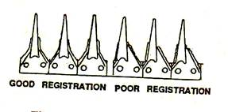
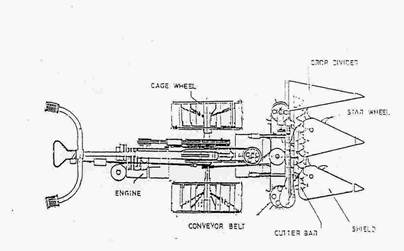
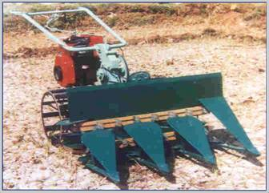
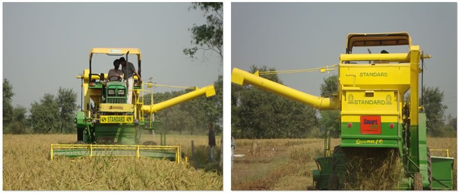
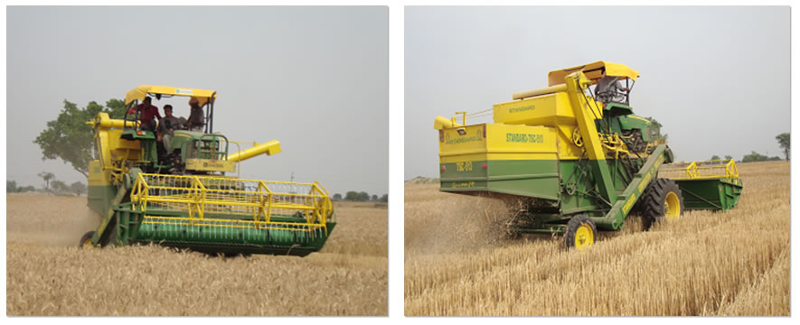
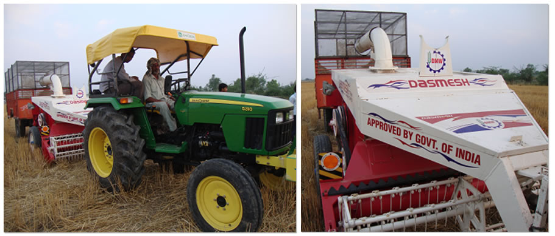

FMP 211 :: Lecture 13 & 14 :: HARVESTING TOOLS AND EQUIPMENT- SICKLES, PADDY REAPERS AND COMBINE - HARVESTING MACHINERY FOR GROUNDNUT, TUBER CROPS – SUGARCANE HARVESTERS

HARVESTING
The operation of cutting, picking, plucking digging or any combination of these for removing the whole crop or edible part of the crop from either under the ground or above the ground is called harvesting
Mechanical actions associate with harvesting are as follows:
- Slicing action with a sharp tool.
- Tearing action with a rough serrated edge
- Scissoring action.
- High velocity impact with sharp or dull edge tool.
ACCORDING TO POWER SOURCE USED HARVESTING TOOLS CAN BE CLASSIFIES AS
(1) Manually operated tools (ii) Animal drawn implements (iii) Power driven machines
SICKLE
Sickle is a simple manually operated harvesting tool. It is used for harvesting crops like paddy, ragi, sorghum etc. It essentially consists of a curved metallic blade and a wooden handle. Sickles are classified into two classes: (i) Plain and (ii) Serrated depending on the nature of the blade edge. In plain sickle the blade edge is smooth and sharp. In serrated sickle the blade edge is with sharp serrated teeth. The plain or serrated edge in the inner side of the blade is used for cutting the crop and hence called cutting edge The forged end of the blade used for fixing the handle is called tang.. Harvesting by sickle is a very slow and labour consuming device.
Sickle
MOWER
Mower is a machine to cut herbage crops and leave them in a swath. Animal drawn and tractor operated mowers are available
According to the cutting tool mowers are classified in to the following types such as: (i) Cylinder mower (ii) Reciprocating mower (iii) Horizontal rotary mower (iv) Gang mower and (v) Flail mower.
a) Cylinder mower: It has rotating helical blades arranged in cylindrical form. With the rotation of blades, forage or grasses are cut continuously. It is used for trimming grass in lawns, golf grounds etc.
b) Reciprocating mower: It is a mower with a knife made of several serrated triangular sections that reciprocate against stationary fingers. The knife cuts the crop by its reciprocating action. It is the most common type of mower used for harvesting forage crops and food grain crops like paddy and wheat. .
c) Horizontal rotary mower: It is a mower with high speed knife rotating in the horizontal plane. Due to rotation of knife, the grass and forage are cut uniformly. Used for trimming lawns , golf grounds etc.
d) Gang mower: It is an assembly of two or more ground driven cylinder mowers. It is used for trimming grass in lawns, golf grounds etc.
e) Flail mower: It is a mower with high speed swinging knives, operating either in the horizontal plane or in the vertical plane.. Used to cut herbaceous weeds like parthenium
CONVENTIONAL MOWER
The conventional mower mainly consists of: (i) A metallic frame (ii) Power transmitting unit and (iii) Cutting bar
Frame
The frame provides space for fitting gears, clutch, bearings, flywheel etc required for the operation of the harvester. A lever is used for lifting the cutting bar during road travel. . A flywheel is used to store energy from the engine to supply steady energy to the cutting mechanism for uniform cutting.
Power transmitting unit
It transmits the power from the power source either from the ground wheel in animal drawn mowers and from PTO for tractor drawn mowers to the cutting tool.
In bullock drawn mowers, the power transmitting unit consists of transport wheels, axle, gears, crank wheel, crankshaft and pitman. The transport wheel gives power to the axle from where the power is transmitted to crank wheel through the gears. From crank wheel the drive is transmitted to pitman through connecting rod. Crank wheel rotates in circular motion and pitman makes reciprocating motion. Connecting rod converts rotary motion in to reciprocating motion. Knife is connected to pitman hence the knife reciprocates and performs the cutting job. There is a ball and socket arrangement to connect the knife with the pitman. The operator controls the driving unit with the help of a dog clutch.
In tractor drawn semi-mounted or mounted type mowers the cutter bar is operated by P.T.O. shaft of the tractor. A carden shaft transmits drive from PTO to the V pulley of the harvester. From V pulley, drive reaches the knife through gears, crank wheel, connecting rod and pitman. The knife reciprocates and cuts the crop. The cutting mechanism is driven independent of the forward motion of the tractor
Cutter bar
It is an assembly of several parts comprising of a knife, fingers, wearing plates, ledger plates, guides and shoes. The knife cuts the grass or grain crop by its reciprocating action`. It is a metallic rectangular bar, on which triangular sections are mounted. The knife sections make reciprocating motion inside the fingers and cuts the plants. There are knife guides with clips to keep the knife sections very closely on the ledger plates for effective cutting action. The knife stops at the centre of the knife guard (finger) on each stroke which indicates good registration..
Cutter bar
Shoe - A shoe is always provided on each end of the cutter bar to regulate the height of cut and to provide easy and smooth sliding of the cutter bar on the land.
Ledger plate - It is a hardened metal inserted in a guard (finger) over which knife sections move to give a scissor like cutting action.
Wearing plate - It is a hardened steel plate attached to the finger bar to form a bearing surface for the back of the knife.
Knife - It is the reciprocating part of the cutter bar, comprising of knife head, knife back and knife sections.
Knife section - It is a steel plate of triangular shape with two cutting edges.
Knife head - It is the portion of the knife which is connected to the pitman.
Knife back - It is the strip of steel to which knife sections are riveted and the knife head is attached.
Grass board - Grass board is provided at the outer end of the mower which causes the cut plants to fall towards the cut material.
Pitman - Pitman is the link between the knife and crank wheel of the mower. It transmits motion to a knife. Wooden pitman is commonly used for the mowers which acts as safety device. It breaks and protects the cutter bar from damage when ever the knife is locked by some obstacle or choked by the crop.
Connecting rod - It is placed between pitman and crank wheel. It converts rotary motion of crank wheel in to reciprocating motion of the knife.
Breaking of knives - Breaking of knives is a common trouble in operation of a mower. It is caused due to play in bearings and worn out knife head holders. Non-alignment is an important cause for breaking the knife because when the mower is out of alignment, it works on a certain angle which is always harmful.
Alignment of mower
Under working condition, the standing crops exert pressure on the cutter bar tending to push it backward. In correct operating position, the crankpin, knife head and the outer end of the knife should be in a straight line. This line should be at right angle to the direction of travel of the mower. For achieving this object, the cutter bar is set at about 88° to the direction of motion i.e. inward lead of 2° is given to it in order to overcome the back pushing action of the crops. When the cutter bar is properly aligned, the knife and the pitman run in a straight line. This gives better cutting of the knife in the field. Generally 2cm lead per metre length of cutter bar is recommended.
Registration of mower
A mower knife is said to be in proper registration when the knife section stops in the centre of its guard ( fingers ) on every stroke i.e. the centre of the knife section is at the centre line of the guard, when it is in operating condition (Fig.3). Adjustment is commonly made by moving the entire cutter bar in or out with respect to the pitman. If mower is not well registered, there is unbalanced load, uneven cutting and excessive clogging of crops on the knife.

Registration of mower
SELF PROPELLED PADDY HARVESTER
It is suitable for harvesting non lodging varieties of paddy crop. The machine consists of an engine, gearbox, ground wheels, handle, and cutter bar assembly, star wheels and gathering header assembly. The power is taken from the engine pulley to the harvester main shaft through compound idlers. The crop is manually harvested along the four sides of the field for a width of 0.5m and cleared from the field for providing space to the machine. At one comer an area of 2.0 x 1.5m is manually harvested to place the machine initially in the field. Since the harvested crop is discharged at the right side of the reaper the machine has to be turned always to the left side. During forward motion of the harvester, crop enters in the cutter bar mechanism and gets sheared and the harvested crop is conveyed to right side of the machine by the conveyor belt . The harvested crop is windrowed in the field, collected manually and transported to threshing yard. The width of operation is 1.0 metre. The coverage is 1.5 ha/day
Advantages of using harvesters
- Labour requirement is reduced
- Large area can be harvested in shorter time. Saving in time
- The availability of a harvest in a locality supports labour force to complete larger area. Hence timely harvest is possible.
- Economical
- Frees the land early for ploughing for the next crop
|  |  |
| Paddy harvester | Paddy harvester |
TERMS CONNECTED WITH HARVESTING OPERATION
Mower: It is a machine use to cut herbage crops and leave them in a swath.
Reaper: It is a machine to cut grain crops.
Reaper binder: It is a machine which cuts the crops and ties them into neat and uniform bundles.
Sickle: It is a curved steel blade with sharp edge in the inner side and a handle. It is used by human power. The person holds the tool and shears the straw or stalk and harvests the crop
Swath: The harvested material laid on the land by the machine when harvesting is in progress is called a swath.
Windrow: It is a row of material formed by combining two or more swaths.
Windrower: It is a machine to cut crops and deliver them in a uniform manner in a row.
COMBINE
It is a machine, which performs the functions of a reaper, thresher and winnower.
Functions
- Cutting the standing crops
- Feeding the cut crops with the threshing unit
- Threshing the crops
- Cleaning the grains freeing it from straw
- Collecting the grains in a container
The functional components are
1. Header 2. Reel 3. Cutter bar 4. Elevator canvas 5. Feeder canvas 6. Feeding drum 7. Threshing drum 8. Concave, 9. Fan 10.chaffer sieve 11. Grain sieve 12.grain auger 13. Tailing auger 14. Grain elevator and 15. Grain container.
Header is used to cut and gather the crop and deliver it to the threshing cylinder. The straw is pushed back on the platform by the reel. Small combines use scoop type headers, while large combines use T type headers
Harvesting is done by a cutting unit, which uses the cutter bar similar to that of the mower. The knife has got serrated edge to prevent the straw from slipping while in operation. There is a suitable cutting platform, which is provided with a real and canvas.
The reel is made of wooden slates, which helps in feeding the crops to the cutting platform. The reel gets the power through suitable gears and shafts. The reel revolves in front of the cutter bar while working in the field. The reel pushes the standing crops towards the cutting unit. The reels are adjustable up and down as in or out. The cutter bar of the combine operates like the cutter bar of a mower The conveyor feeds the crop to the cylinder and concave unit.
The threshing takes place between the cylinder and concave unit of the combine. The basic components of the threshing unit of the combine are similar to a power thresher. As soon as the crops are threshed the threshed material move to straw racks. These racks keep on oscillating and separating the grains.
The cleaning unit consists of a number of sieves and a fan. The unthreshed grains pass through the tailing auger and go for re-threshing. The clean grain passes through the grain elevator and finally goes to the packing unit. Grains are collected in a hopper provided at suitable place. The fan is adjusted such that the chaff etc., blown off the rear side of the machine. The size of the combine is indicated by width of cut it covers in the field.

 |
Paddy Harvester |
 |
Wheat Harvester |
 |
Straw Reaping in Wheat |
Sugarcane Harvester (Video) |
Combine harvester
A combine may be self-propelled type and PTO driven type
Self propelled type
This has got its own dependent engine. This engine gives power for operating all the mechanisms as well as for pulling the weight of the combine. Size varies from 2-4 m.
PTO driven type
This combine is pulled by a tractor. The tractor pulls the combine by its tractive power. The power takes off shaft of the tractor supplies power to the cutting and threshing mechanisms. The power requirement of the combine may be taken on 8 HP/m width of cut for pulled type machine and 12 HP/m width of cut for self propelled machines.
MODEL QUESTIONS
1. List the types of mowers
2. Mention the basic components a mower
3. Explain with a neat sketch the working of a cutter bar
4. List the types of harvesting methods
5. List the advantages of harvesters
6. Mention the components of paddy harvester with a neat sketch and explain their
importance
7. Define registration and alignment
8. Differentiate plain and serrated sickle.
9. The machine which cuts the crops and ties them into a neat and uniform sheaves
is known as
a. reaper binder b. mower c. harvester d. none
10. A mower knife is said to be in proper registration when the knife section stops in
the centre of its guard on every stroke True/False
11. The material as left by the harvesting machine. Is called swath True/False
12. The machine used to cut herbage crops is called
a. reaper b. windrower c. mower d. harvester
13. Swinging knives are used in
a. cylindrical mower b. horizontal rotary mower c. flail mower
d. reciprocating mower.
14. Mention the components of combine harvester with a neat sketch and explain
their importance
15. Calculate total time required to harvest 2.5 ha of grass by means of a 2m mower being operated at 4 Kim/h. Take field efficiency as 80%
16. How many hectares of land can be cut by a combine with 4 m cutter bar, when it is operating at 4km/h
| Download this lecture as PDF here |